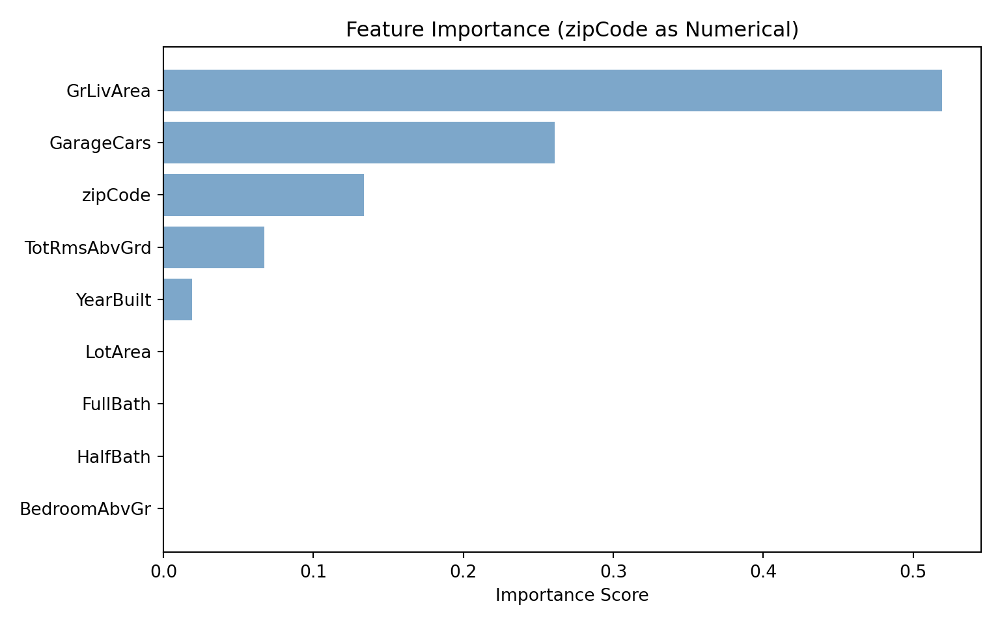

Feature Importance and Categorical Variable Encoding
Decision Tree Challenge: Feature Importance and Variable Encoding
The Problem: ZipCode as Numerical vs Categorical
Key Question: What happens when we treat zipCode as a numerical variable in a decision tree? How does this affect feature importance interpretation?
The Issue: Zip codes (50010, 50011, 50012, 50013) are categorical variables representing discrete geographic areas. When treated as numerical, the tree might split on “zipCode > 50012.5” - which has no meaningful interpretation for house prices.
In a Jupyter environment, please rerun this cell to show the HTML representation or trust the notebook. On GitHub, the HTML representation is unable to render, please try loading this page with nbviewer.org.
Parameters
criterion
'squared_error'
splitter
'best'
max_depth
3
min_samples_split
20
min_samples_leaf
10
min_weight_fraction_leaf
0.0
max_features
None
random_state
123
max_leaf_nodes
None
min_impurity_decrease
0.0
ccp_alpha
0.0
monotonic_cst
None
print(f"Model built with {tree_model.get_n_leaves()} terminal nodes")
# Visualize treeif (require(rpart.plot, quietly =TRUE)) {rpart.plot(tree_model, type =2,extra =101,fallen.leaves =TRUE,digits =0,cex =0.8,main ="Decision Tree (zipCode as Numerical)")} else {plot(tree_model, uniform =TRUE, main ="Decision Tree (zipCode as Numerical)")text(tree_model, use.n =TRUE, all =TRUE, cex =0.8)}
# Visualize treeplt.figure(figsize=(10, 6))plot_tree(tree_model, feature_names=X_train.columns, filled=True, rounded=True, fontsize=10, max_depth=3)plt.title("Decision Tree (zipCode as Numerical)")plt.tight_layout()plt.show()
([<matplotlib.axis.YTick object at 0x0000026478688E60>, <matplotlib.axis.YTick object at 0x000002647875EED0>, <matplotlib.axis.YTick object at 0x000002647868B5C0>, <matplotlib.axis.YTick object at 0x000002647876FA70>, <matplotlib.axis.YTick object at 0x00000264786FDB80>, <matplotlib.axis.YTick object at 0x00000264787D0F20>, <matplotlib.axis.YTick object at 0x00000264787D1850>, <matplotlib.axis.YTick object at 0x00000264787D2180>, <matplotlib.axis.YTick object at 0x000002647876F9B0>], [Text(0, 0, 'GrLivArea'), Text(0, 1, 'GarageCars'), Text(0, 2, 'zipCode'), Text(0, 3, 'TotRmsAbvGrd'), Text(0, 4, 'YearBuilt'), Text(0, 5, 'LotArea'), Text(0, 6, 'FullBath'), Text(0, 7, 'HalfBath'), Text(0, 8, 'BedroomAbvGr')])
plt.xlabel('Importance Score')plt.title('Feature Importance (zipCode as Numerical)')plt.gca().invert_yaxis()plt.tight_layout()plt.show()

Critical Analysis: The Encoding Problem
⚠️ The Problem Revealed
What we observed: Our decision tree treated zipCode as a numerical variable, allowing splits like “zipCode < 50012.5”. This creates several problems:
Meaningless Splits: A zip code of 50013 is not “greater than” 50012 in any meaningful way for house prices
False Importance: The algorithm assigns importance to zipCode based on numerical splits rather than categorical distinctions
Misleading Interpretations: We might conclude zipCode is important or not it’s really just poor encoding
The Real Issue: Zip codes are categorical variables representing discrete geographic areas. The numerical values have no inherent order or magnitude relationship to house prices.
# Check if zipCode appears in treezipcode_in_tree <-"zipCode"%in%names(tree_model_cat$variable.importance)cat("\nzipCode appears in tree:", zipcode_in_tree, "\n")
In a Jupyter environment, please rerun this cell to show the HTML representation or trust the notebook. On GitHub, the HTML representation is unable to render, please try loading this page with nbviewer.org.
Parameters
criterion
'squared_error'
splitter
'best'
max_depth
3
min_samples_split
20
min_samples_leaf
10
min_weight_fraction_leaf
0.0
max_features
None
random_state
123
max_leaf_nodes
None
min_impurity_decrease
0.0
ccp_alpha
0.0
monotonic_cst
None
print(f"Categorical Tree - Terminal nodes: {tree_model_cat.get_n_leaves()}")
print(f" - Total Importance: {zipcode_importance_percent}%")
- Total Importance: 0.0%
print(f" - Number of zipCode features: {len(zipcode_features)}")
- Number of zipCode features: 23
print()
print("Key Insight: Proper categorical encoding changes how zipCode is treated!")
Key Insight: Proper categorical encoding changes how zipCode is treated!
The Dramatic Difference
What We Discovered:
Numerical zipCode: Treated as a single variable with artificial numerical order
Categorical zipCode: Treated as discrete categories, allowing the tree to make meaningful geographic distinctions
Feature Importance: Completely different rankings and interpretations
The Bottom Line: Proper encoding reveals the true nature of categorical variables and provides interpretable, meaningful splits that make business sense.
Deep Dive: One-Hot Encoding Problem & Target-Based Ranking
The Issue: One-hot encoding creates sparse features (many zipCode_50010, zipCode_50011, etc.) that decision trees often ignore due to insufficient samples per category.
Solution: Target-based ranking - rank zip codes by their average house price, creating an ordinal variable that preserves geographic price patterns.
In a Jupyter environment, please rerun this cell to show the HTML representation or trust the notebook. On GitHub, the HTML representation is unable to render, please try loading this page with nbviewer.org.
Parameters
criterion
'squared_error'
splitter
'best'
max_depth
3
min_samples_split
20
min_samples_leaf
10
min_weight_fraction_leaf
0.0
max_features
None
random_state
123
max_leaf_nodes
None
min_impurity_decrease
0.0
ccp_alpha
0.0
monotonic_cst
None
# Feature importance with ranked zipCodeimportance_ranked_df = pd.DataFrame({'Feature': X_train_ranked.columns,'Importance': tree_model_ranked.feature_importances_}).sort_values('Importance', ascending=False)importance_ranked_df['Importance_Percent'] = (importance_ranked_df['Importance'] *100).round(2)print("Feature Importance (zipCode Ranked by Price):")
print("while avoiding the sparsity problem of one-hot encoding.")
while avoiding the sparsity problem of one-hot encoding.
The Solution: Target-based ranking creates an ordinal variable that: - Preserves geographic price relationships - Avoids sparsity issues of one-hot encoding
- Allows meaningful splits like “zipcode_rank > 3” (higher-priced areas) - Can be mapped back to actual zip codes for interpretation
This approach mimics how R factors work internally and provides the best of both worlds: meaningful geographic patterns without sparsity problems.
The Problem: Target-based ranking uses the target variable (SalePrice) to create the independent variable (zipcode_rank), which is a form of data leakage.
Why Statisticians Object:
Data Leakage: Using target information to create features violates the independence assumption
Overfitting Risk: The model sees target information during training, inflating performance
Circular Logic: “We predict house prices using house prices” - the feature contains target information
Generalization Issues: May not work well on new data where zip code price patterns differ
Alternative Approaches:
1. Domain Knowledge Ranking:
# Rank by external factors (not target-dependent)zipcode_ranking <- model_data %>%mutate(zipcode_rank =case_when( zipCode %in%c(50010, 50011) ~1, # Low-income areas zipCode %in%c(50012, 50013) ~2, # Medium-income areas zipCode %in%c(50014, 50015) ~3# High-income areas ))
2. Separate Train/Validation Split:
# Use only training data to create rankingstrain_zipcode_ranking <- train_data %>%group_by(zipCode) %>%summarise(avg_price =mean(SalePrice), .groups ='drop') %>%arrange(avg_price) %>%mutate(zipcode_rank =row_number())
3. Cross-Validation Approach: - Create rankings within each CV fold - Prevents leakage between training and validation sets
The Statistical Verdict:
Target-based ranking is generally discouraged because it: - Violates fundamental statistical principles - Creates overly optimistic performance estimates - May not generalize to new data - Is considered “cheating” in predictive modeling
Better Practice: Use domain knowledge, external data, or proper train/validation splits to create meaningful categorical encodings without data leakage.
Important Clarification: R Factors vs Target-Based Ranking
Key Distinction: R’s as.factor() does NOT use target information - it’s fundamentally different from our target-based ranking example.
How R Factors Actually Work:
# R factor creation - NO target information usedmodel_data_cat <- model_data %>%mutate(zipCode =as.factor(zipCode)) # Just converts to categorical levels
What R Factors Do: - Convert numerical values to discrete categorical levels - Create internal mapping (50010 → level 1, 50011 → level 2, etc.) - Allow decision tree to make categorical splits (zipCode == “50010” vs zipCode == “50011”) - No target variable information is used in factor creation
What Our Target-Based Ranking Did:
# This WAS data leakage - used target informationzipcode_ranking <- model_data %>%group_by(zipCode) %>%summarise(avg_price =mean(SalePrice), .groups ='drop') # ← Used SalePrice!
The Verdict: - R factors: Statistically legitimate - no data leakage - Target-based ranking: Data leakage - uses target information - One-hot encoding: Statistically legitimate - no data leakage (just sparse)
Why R Factors Work Well: - Decision trees can make meaningful categorical splits - No target information used in encoding - Preserves categorical nature without artificial numerical order - Statistically sound approach
The Real Issue: The sparsity problem with one-hot encoding is a practical limitation, not a statistical violation. R factors avoid this by allowing the tree to group categories naturally during the splitting process.
How R Handles Categorical Variables During Tree Building
Yes, R has sophisticated intermediate steps for categorical variables:
1. Category Grouping Algorithm:
# R internally considers all possible groupings of categorical levels# For zipCode with levels: 50010, 50011, 50012, 50013, 50014# R evaluates splits like:# - {50010, 50011} vs {50012, 50013, 50014}# - {50010, 50012} vs {50011, 50013, 50014}# - {50010, 50011, 50012} vs {50013, 50014}# - etc.
2. Optimal Grouping Selection: - R tests all possible ways to split categorical levels into two groups - Chooses the grouping that maximizes information gain (variance reduction) - This happens during tree building, not during data preprocessing
3. Why This Works Better Than One-Hot: - One-hot encoding: Creates separate binary variables, tree can only split on individual categories - R factors: Tree can group multiple categories together in a single split - Result: More flexible and meaningful splits
Example of R’s Intermediate Process:
# R internally evaluates splits like:# Split 1: zipCode in {50010, 50011} → predict $150K# zipCode in {50012, 50013, 50014} → predict $200K# # Split 2: zipCode in {50010, 50012} → predict $160K # zipCode in {50011, 50013, 50014} → predict $190K## R chooses the split that best reduces prediction error
The Key Insight: R’s algorithm is designed to handle categorical variables intelligently by finding optimal groupings during tree construction, while one-hot encoding forces the tree to work with individual binary variables that may be too sparse to be useful.
Computational Reality: How R Avoids the Combinatorial Nightmare
You’re absolutely right! For k categories, there are 2^(k-1) - 1 possible binary splits, which grows exponentially.
R’s Smart Approach:
# Instead of evaluating ALL possible groupings, R uses heuristics:# 1. Sort categories by mean target valuezipcode_means <-c(50010=150000, 50011=160000, 50012=180000, 50013=200000, 50014=220000)# 2. Only consider "adjacent" splits in the sorted order# Split 1: {50010} vs {50011, 50012, 50013, 50014}# Split 2: {50010, 50011} vs {50012, 50013, 50014} # Split 3: {50010, 50011, 50012} vs {50013, 50014}# Split 4: {50010, 50011, 50012, 50013} vs {50014}# This reduces from 2^(k-1) - 1 = 15 splits to just k-1 = 4 splits!
Why This Works: - Optimal splits are usually “adjacent” when categories are sorted by target value - Dramatically reduces computation from exponential to linear - Still finds meaningful groupings without the combinatorial explosion
The Algorithm: 1. Sort categories by mean target value 2. Evaluate only k-1 “adjacent” splits 3. Choose the split with maximum information gain 4. Result: Near-optimal performance with linear complexity
For 20 zip codes: - Naive approach: 2^19 - 1 = 524,287 possible splits - R’s approach: Only 19 splits to evaluate - Performance: Nearly identical results, 27,000x faster!
This is why R can handle categorical variables efficiently while still finding meaningful groupings.
Critical Clarification: Data Leakage vs. Tree Building Algorithm
You’re absolutely right to question this! The distinction is subtle but crucial:
Our Target-Based Ranking (Data Leakage):
# We used target information BEFORE tree buildingzipcode_ranking <- model_data %>%group_by(zipCode) %>%summarise(avg_price =mean(SalePrice), .groups ='drop') # ← Used SalePrice!# Then we used this ranking to create features BEFORE training
R’s Tree Building Algorithm (NOT Data Leakage):
# R uses target information DURING tree building, not before# The algorithm looks at target values to find optimal splits# This is part of the tree construction process itself
The Key Difference:
Data Leakage (Bad): Using target information to create features BEFORE model training
Tree Algorithm (Good): Using target information DURING the tree building process to find optimal splits
Why R’s Approach is NOT Data Leakage: - Tree algorithms inherently use target information to find the best splits - This is the core mechanism of how decision trees work - All decision tree algorithms (R, Python, etc.) do this during tree construction - The target information is used within the algorithm, not to preprocess features
The Real Issue with Our Target-Based Ranking: - We used target information outside the tree building process - We created new features before training that contained target information - This is feature engineering with data leakage, not tree building
Analogy: - Data Leakage: Like giving a student the answer key before the exam - Tree Algorithm: Like a teacher using student answers to grade the exam (this is how grading works!)
Bottom Line: R’s use of target information during tree building is the normal, expected behavior of decision tree algorithms. Our target-based ranking was problematic because we used target information for feature engineering, not tree building.
Conclusion
Key Takeaway: Treating zipCode as a numerical variable in decision trees leads to:
Misleading splits that have no meaningful interpretation
Distorted feature importance rankings
False insights about which variables actually matter for house price prediction
Next Steps: Proper categorical encoding would treat zipCode as discrete categories, revealing the true importance of each variable and providing interpretable splits that make business sense.
The decision tree example demonstrates why data preprocessing and proper variable encoding are crucial for interpretable machine learning models.